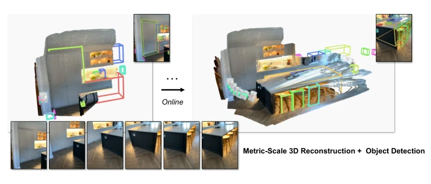
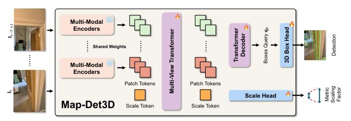
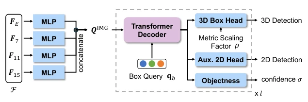
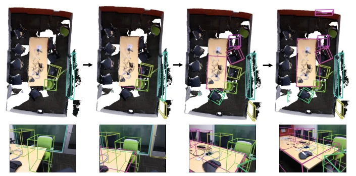
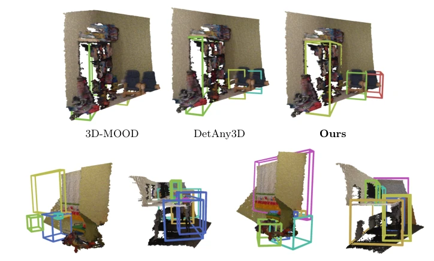
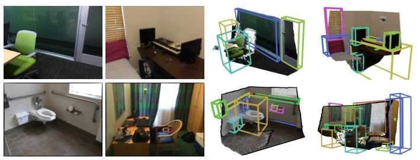

This paper attempts to address the persistent "scale hallucination" issue in monocular 3D detection, by forcefully applying the FF3R reconstruction model onto DETR, which finds a new avenue for geometric priors. The advantages are that it achieves metric scale without LiDAR, online inference is stable, and it achieved SOTA on CA-1M. However, the disadvantages are also obvious: the indoor limitation is too strict, without high-precision scan data like CA-1M it becomes questionable, and currently it is class-agnostic, lacking the "object recognition" step for true embodied AI. The authors use MapAnything as an encoder, which is clever, but it feels like putting a detection coat over a reconstruction model, can it really connect seamlessly? Ablation experiments prove that multi-view and camera parameters are indeed useful, but computational cost and generalization remain underlying concerns. Overall, it is a solid geometric perception improvement, but do not expect it to work on robots immediately, after all it only recognizes indoor scenes.
研究动机Motivation
具身智能需要 metric 3D 感知，但 LiDAR 太贵太耗电，单目方案成了主流。然而单目深度和绝对尺度天生欠约束 [1, 9]，导致现有方法多采用 2D 检测后 lift 到 3D 的策略 [2, 46]。这种“先 2D 后 3D”的 pipeline 极其脆弱，微小的深度误差会主导 3D 定位，且学习到的尺度先验在域迁移（如相机内参变化）时容易失效 [16]。特别是跨设备、跨环境时，这种 brittle 特性暴露无遗。虽然多视图几何能缓解歧义，但现有 FF3R 模型多关注场景重建而非物体实例 [11]，且在线流式处理需因果推理，现有在线系统要么依赖多模态，要么仍保留 2D-to-3D 步骤 [15, 37]。因此，如何仅凭 RGB 视频获得稳定 metric 3D 框仍是难题，尤其是避免尺度漂移。
Embodied AI requires metric 3D perception, but LiDAR is too expensive and power-hungry, so monocular solutions became mainstream. However, monocular depth and absolute scale are inherently underconstrained [1, 9], leading existing methods to adopt strategies of lifting 2D detection to 3D [2, 46]. This "2D then 3D" pipeline is extremely fragile, small depth errors dominate 3D localization, and learned scale priors easily fail during domain transfer (e.g., camera intrinsics changes) [16]. Especially across devices and environments, this brittle characteristic is fully exposed. Although multi-view geometry can alleviate ambiguity, existing FF3R models focus more on scene reconstruction than object instances [11], and online streaming processing requires causal inference, existing online systems either rely on multi-modal or still retain 2D-to-3D steps [15, 37]. Therefore, how to obtain stable metric 3D boxes solely from RGB video remains a challenge, especially avoiding scale drift.

Fig. 1: Map-Det3D. We leverage the metric-scale geometry prior from a multi-view feed-forward 3D reconstruction model and adapts it for 3D object detection from images. In particular, given a streaming video input, Map-Det3D can perform online metric-scale 3D reconstruction and 3D object detection simultaneously in the form of feed-forward inference over a sliding window. Map-Det3D can run on videos alone, but camera poses and intrinsics can be added to further stabilize the geometry estimation.
The Map-Det3D overall framework treats short temporal windows as multi-view inputs, reusing MapAnything [11] as geometric encoder. On the data flow, input T frames RGB and camera parameters, generate patch tokens via multimodal encoder, fuse through 16-layer Multi-view Transformer, output multi-scale feature maps and scale factor $\rho_t$. Detection head based on DETR [3, 50], uses FF3R features to initialize object queries. Core innovation lies in "Up-to-scale 3D Box Head": regress scale-free coordinates (e.g., $\tilde{x}, \tilde{d}$), finally convert to metric units via $\rho_t$ ($x = \rho_t \tilde{x}$), completely avoiding error amplification brought by 2D-to-3D lifting. During training, sliding window causal inference is adopted, supporting online operation. Additionally, introducing camera intrinsics and pose conditioning further stabilizes geometric estimation. Loss function adopts Hungarian matching [13] combined with 2D auxiliary loss and 3D geometric loss, performs depth supervision on each decoder layer, ensuring consistency between geometry and detection.

Fig. 2: Architecture overview. Map-Det3D treats a short temporal window as multi- view input, repurposes a metric FF3R backbone, i.e. MapAnything, as the encoder of a detection transformer, and decodes up-to-scale 3D boxes that are converted to metric scale via the predicted scale factor.

Fig. 3: Detection Architecture. We repurpose the FF3R as the detection trans- former [3,50] encoder and project the multi-scale feature maps into a common dimension, then concatenate them to form QIMG. We gradually refine bounding box queries and decode 3D bounding boxes using our proposed up-to-scale 3D bounding box head.
On CA-1M [16] validation set (unseen scenes), Map-Det3D reaches 16.9 AP25, significantly better than CuTR [16] (13.5) and Cube R-CNN [2] (4.6), even exceeding offline multi-view baseline ImVoxelNet [35]. Zero-shot testing on ScanNetV2 [5] shows robust performance, AP15 reaches 15.2, better than other monocular open-vocabulary methods like 3D-MOOD [46]. Ablation studies show, unfreezing Multi-view Transformer and adding camera pose conditioning is key to performance improvement (AP15 from 11.7 to 21.2). In terms of efficiency, at T=5 FPS 8.3, VRAM usage 6.4G. But qualitative results also expose indoor scene limitations, outdoor generalization unverified, and tracking relies on simple IoU matching, may fail under complex occlusion.

Fig. 4: The effect of the visible part inside the images. The table is only partially observed when T = 1. But as the camera rotates, the model can gradually see the full table. Hence, our tracking design can successfully use the better detection results from Map-Det3D as the per-scene results.

Fig. 5: Qualitative comparison on ScanNet. We qualitatively compare Map-Det3D with, 3D-MOOD [46], DetAny3D [49], and CuTR [16]. We visualize the predicted 3D bounding boxes alongside the ground-truth point cloud to qualitatively assess the accuracy of metric-scale prediction. The results demonstrate that, compared to the baselines, Map-Det3D successfully detects objects given unseen scenes.

Fig. 6: Qualitative Results on ScanNetV2. We visualize the 3D bounding boxes plus depth estimation from Map-Det3D under the zero-shot settings.